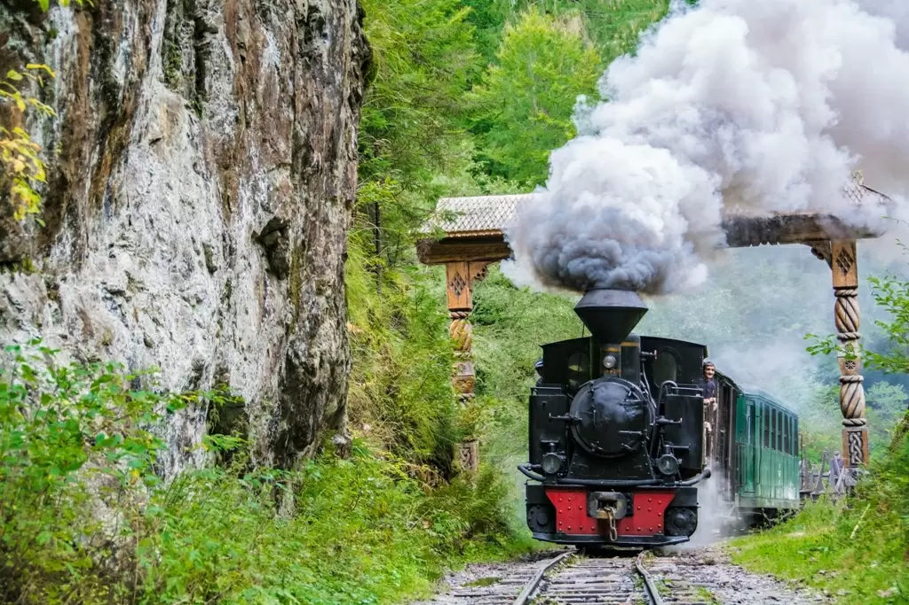
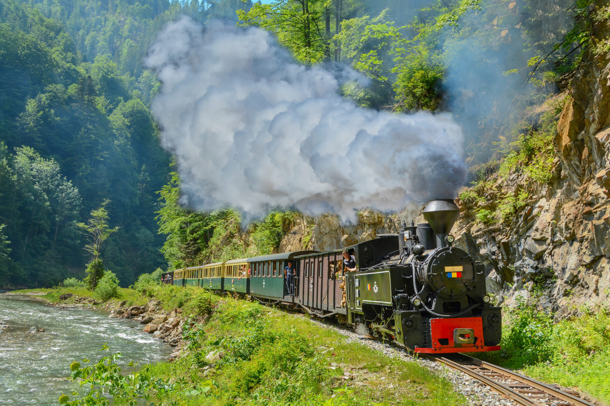
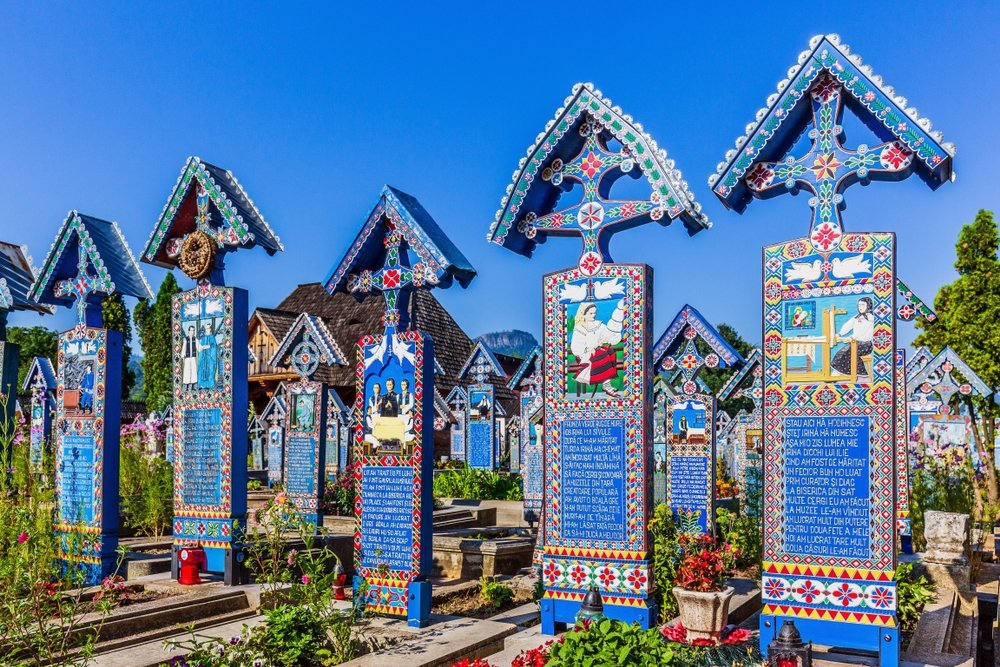
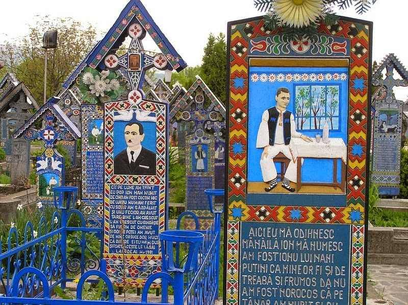
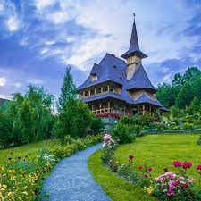
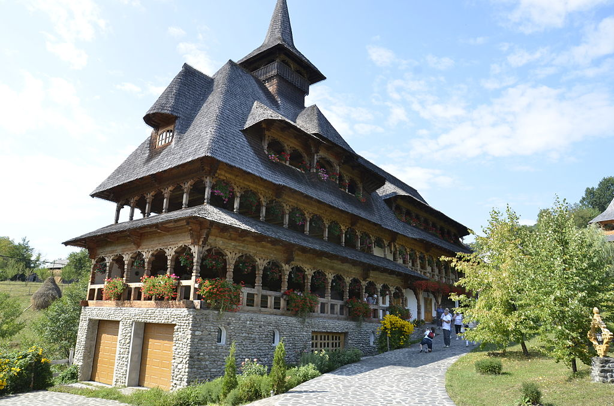

MOCĂNIȚA
Mocăniţa este numele generic folosit în România pentru trenurile care circulă pe liniile înguste. În prezent există o singură mocăniţă complet funcţională, cea care circulă de la Vişeu de Sus, pe Valea Vaserului, în Maramureş. În trecut au existat numeroase astfel de trenuri locale, folosite mai mult pentru transportul pasagerilor şi mărfurilor, mai ales a lemnelor.
Linia îngustă de pe Valea Hârtibaciului a fost construită de autorităţile austro-ungare între anii 1895-1910 pe o lungime de 123 km fiind astfel cea mai lungă cale ferată îngustă din România. Mocăniţa circula iniţial pe tronsoanele Sibiu-Agnita-Sighişoara şi Cornăţel-Vurpăr. În anul 1963 tronsonul Sighişoara-Agnita a fost închis, în 1997 a fost închis şi tronsonul Cornăţel-Vurpăr, iar în anul 2001 s-a închis şi ultimul tronson Sibiu-Agnita. Linia ferată îngustă de pe Valea Hârtibaciului a fost declarată monument istoric în anul 2007. Cu ocazia sărbătoririi a 100 de ani, în anul 2010, mocăniţa a fost repornită din gara Agnita pe o distanţă de 2 km.


Cimitirul Vesel
Cimitirul Vesel este un cimitir din localitatea Săpânța, județul Maramureș, faimos pentru crucile mormintelor viu colorate și picturile naive reprezentând scene din viața și ocupația persoanelor înhumate. Pe unele cruci există chiar versuri în care sunt amintite, deseori cu nuanțe umoristice, persoanele respective. Din anul 2009, cimitirul este obiectivul festivalului anual „Drumul Lung spre Cimitirul Vesel”
Unele cruci sunt pictate pe ambele părți. Pe o parte este plasată o descriere a vieții celui îngropat, iar pe cealaltă — o descriere a motivului morții. Majoritatea crucilor sunt scrise cu greșeli de ortografie și variante arhaice de scriere.


MÂNĂSTIREA BÂRSANA
Mânăstirea Bârsana este situată în Maramureșul istoric, pe valea Izei. Vechea biserică de lemn a fost construită în anul 1711 în locul numit „Părul Călugărului” de preotul nobil Ioan Ștefanca, împreună cu fii săi și alți săteni, pentru a-i mulțumi lui Dumnezeu pentru protecție în timpul ciumei mari din anul anterior. Biserica a fost mutată pe Valea Izei în jurul anului 1739 pe locul unui cimitir apărut după lupta cu tătarii de la 1717.
Acoperișul, cu streașină dublă, are deasupra pronaosului un turn-clopotniță cu camera clopotelor în consolă, deschisă, cu arcade pe stâlpi și acoperiș înalt, piramidal. Bârsana reprezintă cel mai coerent ansamblu decorativ, ce include pictura murală, iconostasul și mobilierul, interiorul bisericii dând impresia unui spațiu plastic inedit prin raport cu tradiția post-bizantină, dominantă până spre sfârșitul secolului al XVIII-lea.